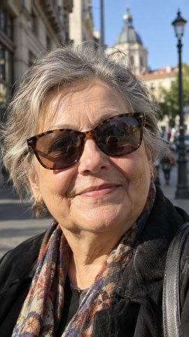
TL;DR We leverage the world prior of existing video diffusion models (VDMs) to create 3D avatars from a single image, by carefully fine-tuning the VDM on public multi-view datasets and view-disentangled expression codes. VDAs let the user generate videos with free control over facial expressions, rendering camera and neck pose. The videos exhibit physically plausible dynamics and light interactions, such as reflections, shadows and refractions.
Read the abstract
Video diffusion models (VDMs) trained on internet-scale data encode a rich prior on appearance, motion, and physics that is difficult to replicate with explicit 3D rendering and costly 3D data capture. We introduce Video Diffusion Avatars (VDAs), a method that creates photo-realistic, multi-view consistent avatars from a single image by fine-tuning a VDM for precise control over camera viewpoint, facial expression, and upper-body pose. Departing from 3D morphable models (3DMMs), VDAs use a learned expression space that lifts the expressiveness ceiling of 3DMMs, e.g. for the tongue and mouth interior. However, learned expression codes exhibit heavy viewpoint bias, as our DISTRACT benchmark reveals. We show that this bias can be removed through disentanglement, enabling their use as driving signals for multi-view consistent avatars. Camera and upper-body pose are controlled jointly via proxy-mesh renderings, giving independent control over expression, pose, and viewpoint. A camera-triplet training strategy makes the approach efficient: our models train for 34 hours on a single A100 using only public multi-view data. VDAs outperform state-of-the-art single-image 3D avatars on novel-view reenactment, reducing face LPIPS by 29% and improving perceptual quality (JOD) by 66% on BecomingLit. A static 3DGS reconstruction probe further confirms that our generations are the most multi-view consistent. Built on a video prior, VDAs produce effects beyond the reach of explicit renderers, including physically plausible hair dynamics, shadows, reflections, and refractions.
- One input image
- Generalizes to OOD, e.g. human-like creatures and drawings
- Control inputs
- Independent control over expression, target camera and upper-body pose
- Expression control
- View-disentangled X-NeMo expression codes (+ FLAME proxy)
- Camera + upper-body control
- 2D skeleton and proxy mesh (FLAME + SAM 3D Body)
- Affordability
- Training takes only 34 A100 hours, on public multi-view data only (NeRSemble, AVA-256)
- Quality
- −29% face LPIPS and +66% JOD on BecomingLit
VDA offers three independent control signals
The camera follows any path around the head. Reflections and refractions move with the view, while the person remains frozen here, as enforced by static expression and neck signals.
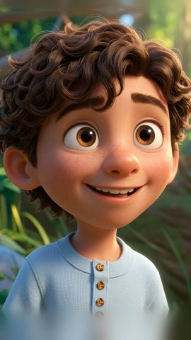
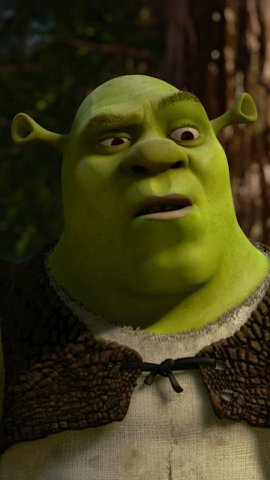
We can control the upper-body pose by changing joint angles in the underlying proxy mesh.
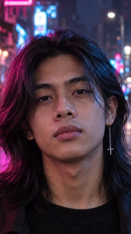
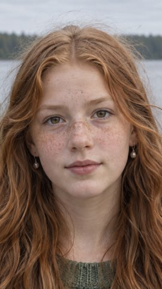
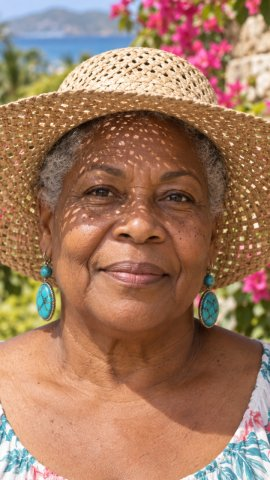
Here we add facial expressions, as dictated by a driving video.
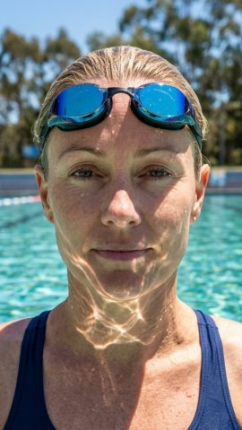
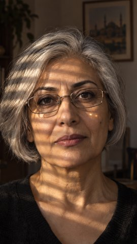
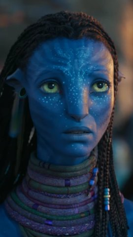
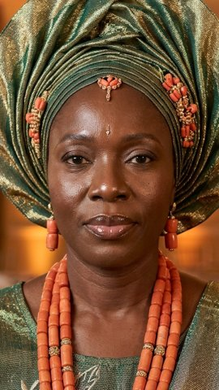
How VDA works
We fine-tune WAN-Animate-14B with two conditioning signals: a proxy-mesh rendering that sets camera and upper-body pose, and disentangled expression codes that drive the face.
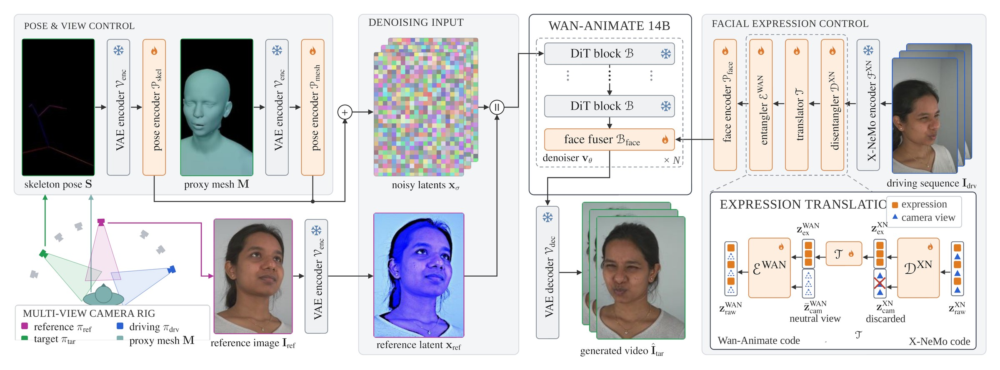
Camera triplets
Each training sample shows one moment from three different cameras. The model sees the image from the reference camera and the video from the driving camera and must render the target camera, which forces it to reason about the head in 3D. Training takes 34 hours on a single A100 with public data (NeRSemble, AVA-256).
Proxy-mesh conditioning
A FLAME head on a SAM 3D Body torso is rendered into the target camera. Each pixel is colored by the direction of its target-camera ray, expressed in the head frame for the head and in a pelvis-aligned frame for the torso, so the color contrast between them encodes the neck pose while the overall shading encodes the target viewpoint.
View-invariant expression codes
Learned expression codes capture far more than FLAME, down to the tongue and mouth interior, but they also leak the viewpoint of the driving camera. A small disentangler splits X-NeMo codes into expression and camera parts, and a translator maps the expression part into WAN-Animate's expression space with a neutral camera code.
DISTRACT: are expression codes view-invariant?
Our DISTRACT benchmark asks an encoder to retrieve the same expression seen from another camera, among distractors with other expressions. Learned expression spaces reach only 8–21% rank-1 accuracy, below the FLAME-based DECA: the observed viewpoint dominates their latent space. A small MLP probe on the frozen codes lifts them to 90–98%, so the expression is in the code, entangled with the viewpoint. X-NeMo reaches the highest accuracy after the probe, which motivates our use of X-NeMo codes; our disentangler removes the entanglement.
Comparison with the state of the art
Pick a task and a baseline, then drag the divider.
Held-out dataset (BecomingLit). The model sees the reference image from the reference camera and the driving video from the driving camera, and renders the target camera, which provides the ground truth.
CAP4DOurs
Full 360° orbits
Our model renders plausible views all around the head, far beyond the viewpoints in its training data. Drag images to orbit around the head.
0°azimuth · drag to orbit
Fast inference and long-term consistency
We distill VDA into an autoregressive few-step VDM with a Self-Forcing-inspired strategy. As a result, the avatars stay consistent for thousands of frames and generate at 4.8 frames per second at a resolution of 288×512 pixels. One driving video and one camera sweep animate ten identities.
Driving videoProxy mesh
frame 1 / 1029
Video
BibTeX
@article{giebenhain2026vda,
title = {Video Diffusion Avatars: Taming Video Diffusion Models into Controllable 3D Avatars},
author = {Giebenhain, Simon and Kirschstein, Tobias and Schoneveld, Liam and
Davoli, Davide and Chen, Zhe and Nie{\ss}ner, Matthias},
journal = {arXiv preprint arXiv:2610.23772},
eprint = {2610.23772},
archivePrefix = {arXiv},
url = {https://arxiv.org/abs/2610.23772},
year = {2026}
}